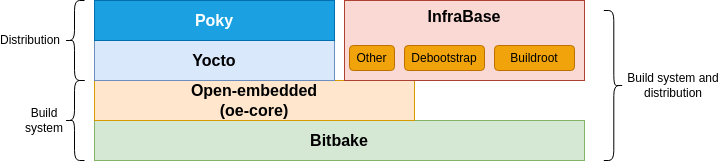
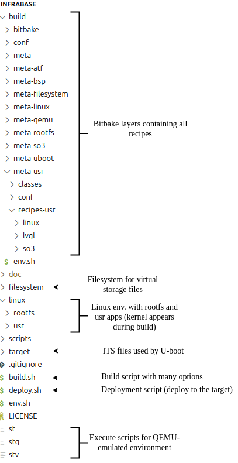
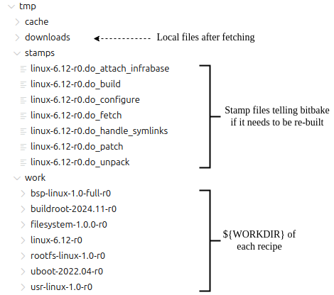

5. Build System
This chapter gives an overview of the Infrabase build system. The build commands are given in the user guide chapter.
The Infrabase build system relies on various scripts and methods, but is mainly
driven by bitbake recipes.
We call standard scripts all shell scripts present in the scripts directory at the root of Infrabase,
the most commonly used ones are build.sh, deploy.sh, mount.sh
The main concepts of bitbake are: layers, configurations, classes, recipes and tasks.
A layer can be defined as a collection of configurations, classes and recipes associated to a component. It describes the overall build process with the different tasks belonging to recipes.
Classes are configuration-independent functionalities/tasks and can have hierarchies (a base class can be inherited by other classes).
Recipes contain rules to be executed for a specific application or component.
Tasks are defined in classes or recipes and are the core functions managed by the build system. Tasks are either (bash) shell script or python functions
Configurations are everywhere, but the local.conf file located in conf/ directory contains the
general configuration.
5.1. Bitbake environment
The Infrabase build system relies on Bitbake which is the task orchestrator system used by Yocto. The overall architecture is depicted in the figure below.

Fig. 5.1 Differences between Yocto and Infrabase in the build system architecture
While Yocto is closely related to other desktop-oriented distributions, using many of the same components as found on Desktops. Infrabase instead has opted to use buildroot which is more suitable for embedded use cases.
Infrabase makes use of the meta layer from OpenEmbedded because it provides several classes
which enhance the developer experience of a Bitbake-based build system - so they should be considered as
an integral part of the Infrabase.
5.2. Infrabase build system
In Infrabase, bitbake and some small parts of OpenEmbedded are used to build the initial environment and to reconcile patches of components after the modifications of the source code.
After the initial clone of the repository, bitbake allows to build all components by fetching the code from the original location and applying the related patchsets.
The updates of patches following some modifications of the repository are part of the development flow.
We differentiate a bitbake script from a standard script. To ease development, consider using the standard scripts from
the scripts/ directory, they can be invoked from anywhere in the project.
5.3. Build system directory organization
All build system files (except the standard scripts) are located in the build/ directory.
Warning
Do not delete the build/ directory. It is not automatically generated and
is stored in git. This is because the build/ directory contains layers. See
directories that beging with the meta- prefix.
Actually, bitbake creates a tmp/ subdirectory within build/. If a complete re-build is required,
you can delete tmp/ at any time.
build/deploy/ is generated as well, but sits deliberately outside tmp/ so that a clean does not
wipe it: it holds the local deploy of the user space and, under deploy/tezi/<platform>, the HTTP feed a
board may be installing from.

Fig. 5.2 Build system directory organization as stored in git
In bitbake, a layer corresponds to a meta directory entry. For example, the meta/ directory is
a generic layer which is used by all other layers.
The layer set is fixed and regenerated into build/conf/bblayers.conf by
scripts/common/bblayers.sh:regen_bblayers on every build.sh / deploy.sh
invocation, so adding a layer is a one-line change there rather than a hand edit:
Layer |
Content |
|---|---|
|
the generic OpenEmbedded base (classes shared by every other layer) |
|
the QEMU emulator built for the virt32 / virt64 platforms |
|
storage images, partitioning and the mount/umount machinery |
|
U-Boot 2022.04 (QEMU virt, Raspberry Pi) and 2024.07 (imx-boot for the Verdin) |
|
the Linux kernel, one recipe per version/fork |
|
the root filesystem (buildroot by default) and the initramfs |
|
the user-space applications |
|
the per-platform glue: boot chain assembly, ITS templates, deploy |
|
ARM Trusted Firmware and OP-TEE |
|
the AVZ hypervisor, fetched from the SO3 repository and built with an
|
Which of atf, optee and avz a given build actually compiles is decided
by IB_BOOT_CHAIN at the dependency level (bsp.bbclass, through the
IB_CHAIN_HAS_<STAGE> flags derived from it),
not by adding and removing layers — the layer set is the same for every build.
Let’s focus on the meta-linux layer as an example.
5.3.1. Directory conf/
General configuration directory
bitbake.conf - Main configuration for bitbake, each new layer must be added to this file to tell bitbake to consider the recipes described in the layer directory.
local.conf - Contains the influential project-wide configuration variables
which by convention begin with the IB_ prefix, these configuration variables can be used by any recipe.
site.conf - Optional and untracked, included by bitbake.conf after local.conf, so its
assignments win. This is where a single machine deviates from the tracked defaults — publishing the HTTP
feed somewhere else, for instance — without dirtying the repository. It is absent on most machines, and
include is silent when the file does not exist.
5.3.2. Directory meta-linux/classes
It defines the generic tasks/functions that are used by the recipe, like do_configure and do_build (two
examples of tasks)
5.3.3. Directory meta-linux/conf
Each layer has a very similar file called layer.conf which tells bitbake further information
about the dependencies between layers and their priorities in the build process. Currently,
all layers are processed with the same priority (4).
5.3.4. Directory recipes-*
These are the recipes of the layer. In most cases, there is one recipe by layer (except for rootfs) which describes how to build the target component associated to the layer. Of course, depending on the number of releases/versions, there can be several recipes as well.
Each recipe may have several subdirectories. Typically, a directory with the name of the component (linux)
which contains the recipe files and a files/ directory which contains additional files and patches.
5.3.5. Directory filesystem
This directory is special, it is used as a staging area for the preparation of the file
system disk image. Before deployment or upon filesystem creation, symbolic links named
p[0-9]+ are created. So for a disk image with 2 partitions filesystem/ will contain p1 and p2.
For more information read the deployment section of the user guide chapter.
5.3.5.1. The recipe
The configuration and requirements of a recipe is given in a file with the .bb extension (for
example linux-5.10.bb in our case).
5.3.5.2. Patchset
A patchset is a collection pf patches which are processed during the build, with the do_patch tasks.
In Infrabase, the list of patches to be applied is contained in a file with .inc extension within
the files/ directory. And the list of .inc files to be considered in the recipe is described in the
recipe file (linux-5.10.bb).
5.3.6. Directory tmp
Bitbake automatically creates a tmp/ directory in build/ for his management and project-related
files. The figure above shows the contents of this directory.

Fig. 5.3 Directory tree of the tmp/ directory in build/
Once a task is executed successfully, a stamp file (0 byte) is created so that bitbake will not re-execute
Note
Note that standard scripts remove the stamp files associated to the component to be re-built. Only the bsp recipe does not delete the stamps for individual components except the one corresponding to itself.
5.4. Infrabase Basic workflow
Before running build.sh, always start by sourcing the IB environment like so : . env.sh or source env.sh
This will modify the PATH variable - making it possible to invoke standard scripts from anywhere
in the project.
The initial build can be achieved by means of the build.sh <bsp_name> command (the recipe is a
positional argument). It will fetch, patch, prepare the environment and build everything (kernel,
rootfs, apps, etc.).
To list all available recipes (BSPs and components) one can use build.sh -l.
In the build process, there is a particular task called do_attach_infrabase which perform a copy
of source code to the root of infrabase. Hence, the development can be done independently
of the tmp/ directory managed by bitbake.
Therefore, the development is done on the source code related to the branch while the original files are not modified (in tmp/work/) directories.
This allows developers to perform a diff (using the do_updiff task) which will generate
the patches for the differences.
5.4.1. Protecting local edits
The attached component trees (linux/linux, u-boot, qemu, …) are not in git: they are
regenerated by do_attach_infrabase from the freshly fetched and patched sources. An edit made directly
there and not folded back into the patchset therefore has no version-control safety net, and a re-attach
would destroy it.
To prevent that, each attach records a sha256 manifest of the files it wrote, next to the tree it wrote
them into (<tree>.attach.sha256, gitignored). The next attach verifies those files first and refuses
to proceed if any of them changed:
ERROR: Refusing to re-attach linux (would overwrite the files above). Run
'bitbake linux -c updiff' to fold them into the patch set, or set
IB_FORCE_ATTACH=1 to discard them and re-attach.
So the normal answer is to run do_updiff and keep your work as patches. IB_FORCE_ATTACH=1 is the
escape hatch when the edits are genuinely disposable; the previous tree is kept as <tree>.back in either
case. Files produced by a later make are not in the manifest, so a freshly built tree still verifies
clean, and a clean of a recipe drops the manifest on purpose.
Warning
It has to be noted that the generated patches are issued from the difference between the local
files and the original patched files. This leads to an incremental patching process.
The diff process is always done against the directory which is stored in tmp/work/<component>/
5.4.2. Building a patchset
Following a development sprint, patchsets have to be (re-)generated in order to keep track of the
code evolution. This is achieved by means of the do_updiff task. It has to be executed in the
build directory. For example, if we do changes in linux, the patchset will be generated
with the following command:
~/infrabase/build$ bitbake linux -c updiff
As result, the patchset is generated in build/meta-linux/recipes-linux/linux/files directory with
the file 000x-linux-5.10-r0-patches.inc and its associated directory called 000x-linux-5.10-r0
in which the set of patches is located.
The prefix is made of four digits and is incremented at each patchset generation.
Based on these two elements, the patchset can be manually worked out.
To include a patchset in a recipe, the recipe file has to include the following lines:
FILESPATH:prepend: := "${THISDIR}/files/0001-${PF}:"
require files/0001-${PF}-patches.inc
Each recipe can have one or several patchsets according to the patch organization, and
the first patchset should be called with prefix 0001-
5.4.3. Excluding generated files
do_updiff diffs the whole attached tree, so anything generated in it would end up in the patchset.
The shared exclusions (.git, patches, the kbuild leftovers, …) live in the patch class, and a
recipe adds its own with IB_UPDIFF_EXCLUDE — a space-separated list of file or directory names matched
at any depth. The QEMU recipe is the clearest case:
IB_UPDIFF_EXCLUDE = "build subprojects GNUmakefile"
Those three are created by do_configure, i.e. after the pristine snapshot is taken, so without the
exclusion they would read as thousands of added files. A blanket exclusion in the shared class would be
unsafe — another recipe might ship real source under such a name — hence the per-recipe opt-in.